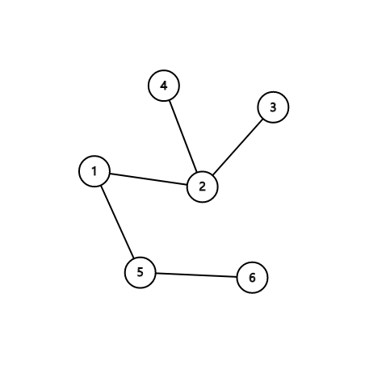

X 国有 $n$ 座城市，$n − 1$ 条长度为 $1$ 的道路，每条道路连接两座城市，且任意两座城市都能通过若干条道路相互到达，显然，城市和道路形成了一棵树。
X 国国王决定将 $k$ 座城市钦定为 X 国的核心城市，这 $k$ 座城市需满足以下两个条件：
第一行 $2$ 个正整数 $n,k$。
接下来 $n - 1$ 行，每行 $2$ 个正整数 $u,v$，表示第 $u$ 座城市与第 $v$ 座城市之间有一条长度为 $1$ 的道路。
数据范围：
一行一个整数，表示答案。
6 3 1 2 2 3 2 4 1 5 5 6
1
【样例说明】

钦定 $1,2,5$ 这 $3$ 座城市为核心城市，这样 $3,4,6$ 另外 $3$ 座非核心城市与核心城市的距离均为 $1$，因此答案为 $1$。
 Comet OJ
Comet OJ